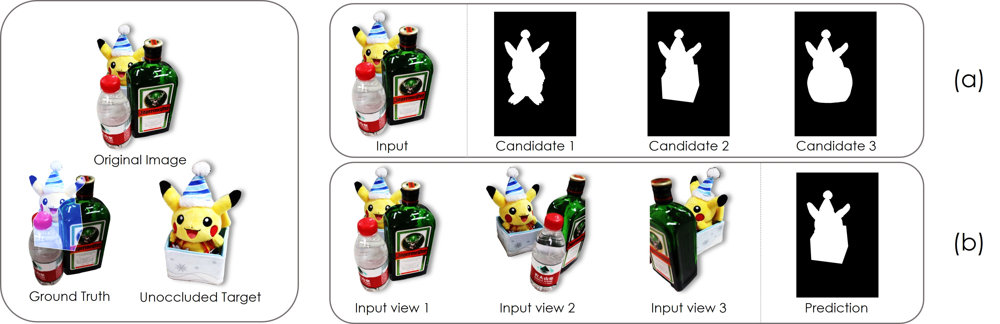
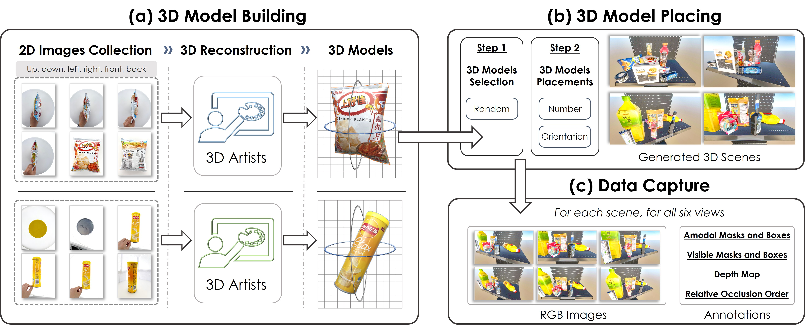
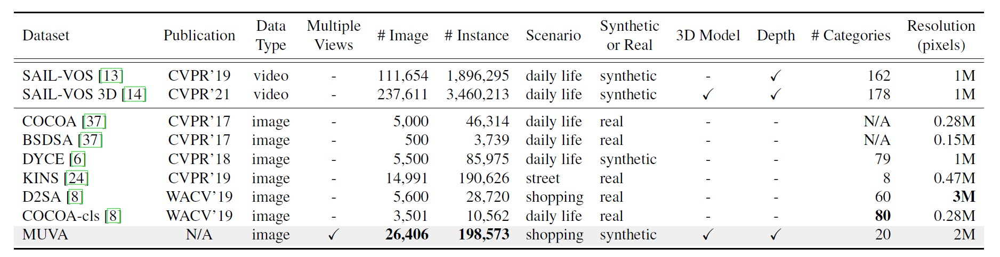
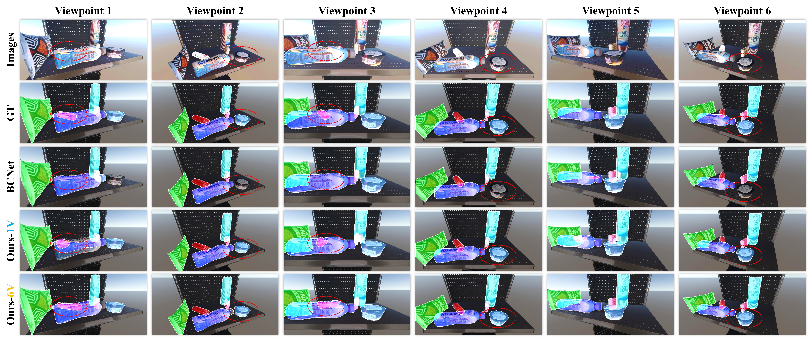

ICCV
MUVA: A New Large-Scale Benchmark for Multi-view Amodal Instance Segmentation in the Shopping Scenario
*Corresponding author
Abstract
Overview
Amodal Instance Segmentation (AIS) endeavors to accurately deduce complete object shapes that are partially or fully occluded. However, the inherent ill-posed nature of single-view datasets poses challenges in determining occluded shapes. A multi-view framework may help alleviate this problem, as humans often adjust their perspective when encountering occluded objects. At present, this approach has not yet been explored by existing methods and datasets. To bridge this gap, we propose a new task called M ulti-view A modal I nstance S egmentation (MAIS) and introduce the MUVA dataset, the first MU lti- V iew A IS dataset that takes the shopping scenario as instantiation. MUVA provides comprehensive annotations, including multi-view amodal/visible segmentation masks, 3D models, and depth maps, making it the largest image-level AIS dataset in terms of both the number of images and instances. Additionally, we propose a new method for aggregating representative features across different instances and views, which demonstrates promising results in accurately predicting occluded objects from one viewpoint by leveraging information from other viewpoints. Besides, we also demonstrate that MUVA can benefit the AIS task in real-world scenarios.
01 · Figure
Targeting at the ill-posed problem in the AIS task

02 · Figure
Dataset Generation Pipeline

03 · Figure
Datasets Comparison

04 · Figure
Segmentation Results Comparison

Citation
BibTeX
@inproceedings{li2023muva,
author={Li, Zhixuan and Ye, Weining and Terven, Juan and Bennett, Zachary and Zheng, Ying and Jiang, Tingting and Huang, Tiejun},
title={{MUVA}: A New Large-Scale Benchmark for Multi-view Amodal Instance Segmentation in the Shopping Scenario},
booktitle={Proceedings of the IEEE/CVF International Conference on Computer Vision},
pages={23504--23513},
year={2023}
}